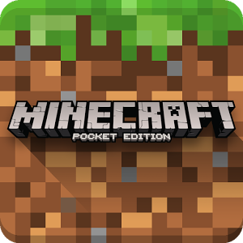

Top PC Games of 2016
Top PC Games of 2016
Here are the top 5 PC games of 2016 for all gamers alike. The ratings are based on the number of players each game has. If you're a gamer you should definitely check it out!
Top MMORPG Games of 2016
These are the top 5 massively multiplayer online role-playing games. If you're interested in playing a new interactive game with your friends (or to just meet new gaming friends online), these games are for you!
Top iPhone Games of 2016
The top 5 iPhone games span from a sandbox Mincraft to a board game called Life. With phones becoming so diverse, we can only imagine the games to continue to grow along side the phones.